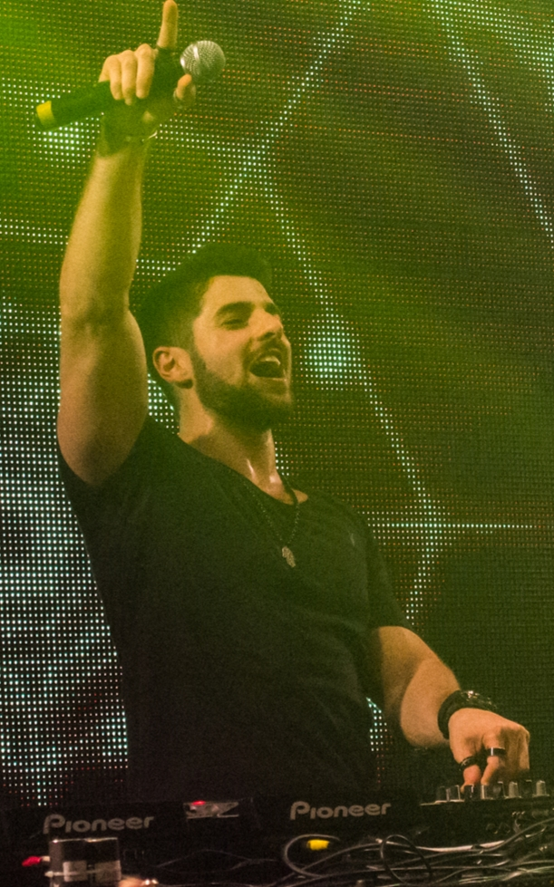

Eletrônica
Alok fará show com megaestrutura na beira da praia; saiba como assistir
DJ brasileiro descreve apresentação no Rio de Janeiro como 'show do século'
Um dos principais DJs do mundo, Alok tem grande apresentação marcada para o dia 26 de agosto de 2023. O artista de 31 anos se apresentará no Rio de Janeiro em cima de uma megaestrutura montada na beira da praia.
Vale lembrar como o evento, descrito como "show do século" e feito em comemoração aos 100 anos do Hotel Copacabana Palace, também acontece no mesmo dia do aniversário de 32 anos dele. Em publicação no Instagram, Alok falou sobre as expectativas da apresentação.
"Uma pirâmide de quase 30 metros de altura e centenas de painéis de LED interagindo com lasers e luzes. Ainda teremos um show de drones, uma bateria com 120 integrantes das 12 escolas de samba do Grupo Especial e um encerramento emocionante com queima de fogos!"
Como assistir ao show de Alok com megaestrutura no Rio de Janeiro?
Idealizado e produzido pela SRCOM, o show de Alok tem entrada gratuita. Caso você não consiga comparecer, você pode acompanhar a apresentação pelo Multishow (canal de TV fechada) ou Globoplay (serviço de streaming).
Referência da noticia!